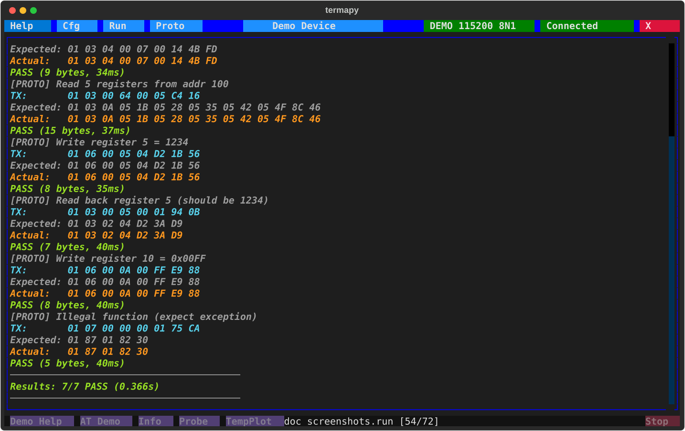
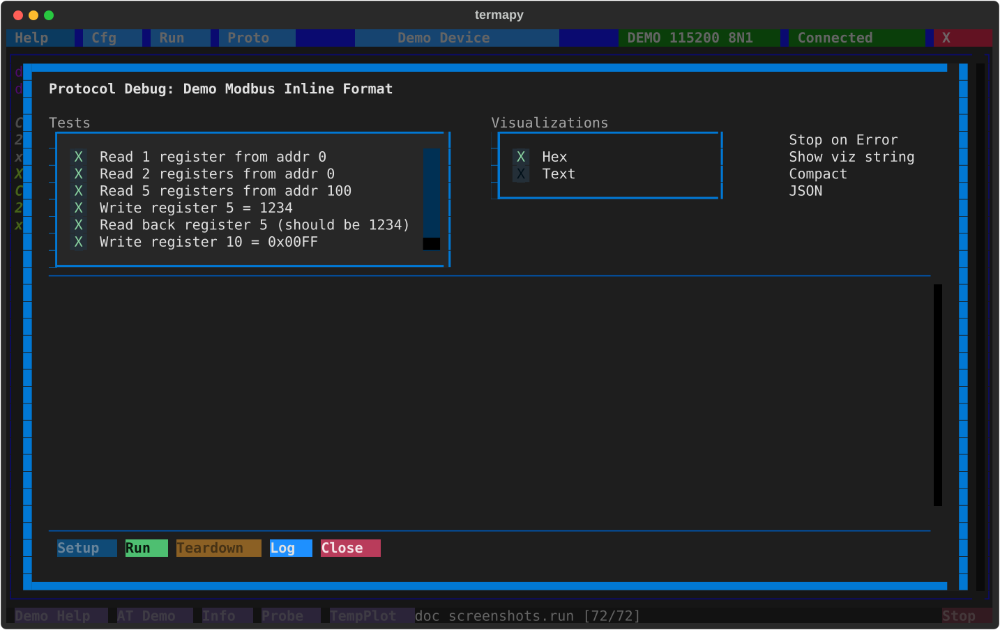

Protocol testing¶
Automated send/expect test scripts for binary serial protocols. Each step sends data, waits for a response, and reports PASS/FAIL.
For interactive sending and CRC commands, see Serial Tools.
Protocol test scripts¶
Create .pro files in the per-config proto/ folder. A script is
TOML: a header of defaults, then one [[test]] table per send/expect
step. The Proto picker lists them newest first with size and age, and
/proto.rename renames one.
# example.pro
name = "Modbus smoke test"
timeout = "1000ms" # default expect timeout
frame_gap = "50ms" # silence that ends a frame
setup = ["/term.hex on"] # commands run before the first test
teardown = ["/term.hex off"]
[[test]]
name = "Read registers"
send = "01 03 00 00 00 0A C5 CD"
expect = "01 03 14 ** ** ** ** ** ** ** ** ** ** ** ** ** ** ** ** ** ** ** **"
[[test]]
name = "Write register"
send = "01 06 00 01 00 03 98 0B"
expect = "01 06 00 01 00 03 98 0B"
timeout = "500ms" # per-test override
# Text protocols work too: quote the text, \r \n escapes are honored
[[test]]
name = "AT query"
send = '"AT+VERSION?\r"'
expect = '"V1." ** ** "\r"'
send_fmt = "Title:AT_Command Command:S1-*" # optional inline format specs
expect_fmt = "Title:AT_Response Response:S1-*" # (see the format spec language below)
Run with /proto.run example.pro. Each test reports PASS/FAIL.

Script keys¶
Header (defaults for every test):
name: script display nametimeout: default expect timeout (default 1000ms)frame_gap: silence gap that ends a frame (default 50ms)strip_ansi: strip ANSI escape sequences from responses before matchingquiet: hide setup/teardown outputsetup/teardown: lists of commands run before the first test / after the lastviz: visualizer names allowed in the debug screen's dropdown (empty = all)send_fmt/expect_fmt: default inline format specs for TX / RX datajson_file: write the results as JSON to this file after a run
Per [[test]]:
name: test namesend: hex bytes (01 03 ...) or quoted text ('"AT\r"'); nothing is appendedexpect: pattern to match (**= any byte); hex or quoted texttimeout: per-test overridesetup/teardown: commands around this one testviz: force one visualizer for this test in the debug screensend_fmt/expect_fmt: inline format specs for this test
Legacy flat format¶
Older scripts use a colon-keyed flat format (@timeout 1000ms,
label:, send:, expect:, timeout:, delay:, flush:, cmd:).
It is still parsed when a file is not valid TOML, but JSON result
output (json_file, --json) needs the TOML form.
Packet visualizers¶
The proto debug screen uses pluggable visualizers to decode packet bytes into
named columns. Built-in visualizers (Hex, Text, Modbus) ship with termapy. Add
your own by dropping a .py file into termapy_cfg/<config>/viz/.

Multiple visualizers can be active at once via the checklist. Enable "Show viz string" to display the raw format spec above each table.
Selecting visualizers in .pro files:
Use viz in the script header to limit which visualizers appear in the dropdown.
Use viz in a [[test]] section to force that visualizer for the test:
viz = ["Modbus"] # header: only offer Modbus in the dropdown
[[test]]
name = "Read registers"
viz = "Modbus" # force Modbus view for this test
send = "01 03 00 00 00 01 84 0A"
expect = "01 03 02 00 07 F9 86"
Format spec language¶
Format specs decode raw bytes into named, typed fields. One line defines your
entire packet layout. Used in protocol testing (.pro files), data capture
(/cap.struct, /cap.hex), and the proto debug screen.
Syntax¶
Each field: Name:TypeByteRange. Fields separated by spaces.
Given the bytes 01 00 C8 FF FE 0A, this decodes to:
ID = 01 (byte 1 as hex)
Temp = 200 (bytes 2-3 as unsigned int, big-endian)
Signed = -2 (bytes 4-5 as signed int, big-endian)
Status = 0A (byte 6 as hex)
In protocol tests, termapy decodes both expected and actual bytes, then shows per-column pass/fail:
Expected: 01 00 C8 FF FE 0A -> ID:01 Temp:200 Signed:-2 Status:0A
Actual: 01 00 C9 FF FE 0A -> ID:01 Temp:201 Signed:-2 Status:0A
match MISMATCH match match
Type reference¶
| Code | Meaning | Example | Output |
|---|---|---|---|
H |
Hex bytes | H1, H3-4 |
0A, 01FF |
U |
Unsigned integer | U1, U3-4 |
10, 256 |
I |
Signed integer | I1, I3-4 |
-1, +127 |
S |
ASCII string | S5-12 |
Hello... |
F |
IEEE 754 float | F1-4 |
3.14 |
B |
Bit field | B1.3, B1-2.7-9 |
1, 5 |
_ |
Padding (hidden) | _:_3-4 |
(skipped) |
crc* |
CRC verify | CRC:crc16-modbus |
pass/fail |
Integers support 1, 2, 3, 4, and 8 byte widths. Floats are 4-byte (F32) or
8-byte (F64). Byte indexing is 1-based. H7-* = wildcard to end of packet.
Endianness¶
Byte order in the spec IS the endianness - no separate flags needed:
U2-3= bytes 2 then 3 = big-endian:00 C8= 200U3-2= bytes 3 then 2 = little-endian:C8 00= 51200I4-5= big-endian signed:FF FE= -2I5-4= little-endian signed:FE FF= -257
You read the spec the same way you read the protocol datasheet. Modbus
devices are big-endian (U2-3), x86-based devices are little-endian (U3-2).
CRC fields don't take byte indices -- they use the algorithm's natural
wire order by default (low byte first for refout=True algorithms like
Modbus, USB, CRC-32; high byte first for refout=False like XMODEM,
CCITT-FALSE). Add _le or _be only when your protocol wires the CRC
opposite to that natural order: CRC:crc16-modbus_be would mean
"Modbus CRC, but the bytes go high-first on this particular wire."
Bit fields¶
Extract individual bits or bit ranges from bytes:
B4.0- bit 0 of byte 4 (LSB)B4.7- bit 7 of byte 4 (MSB)B4.5-7- bits 5-7 of byte 4 (3-bit value)B4-5.0-15- 16-bit range across bytes 4-5
Example: a status byte where each bit means something:
Real-world examples¶
Modbus RTU response (read 2 holding registers):
Decodes 01 03 04 00 C8 01 F4 XX XX to Slave:01 Func:03 Len:4
Reg0:200 Reg1:500 CRC:pass
GPS binary packet (mixed types):
Sensor with string ID and padding: